Créditos de las fotos
Las fotos de los coches son de Wikimedia Commons y se usan según su licencia libre. Gracias a sus autores.
Los coches de las fotos son ejemplos de los modelos que importamos; no son unidades a la venta salvo que aparezcan en la sección de stock.

Mercedes-Benz E 500 (W124). Foto de Matti Blume, licencia CC BY-SA 4.0. Ver original en Wikimedia Commons. Recortada y reducida para la web.
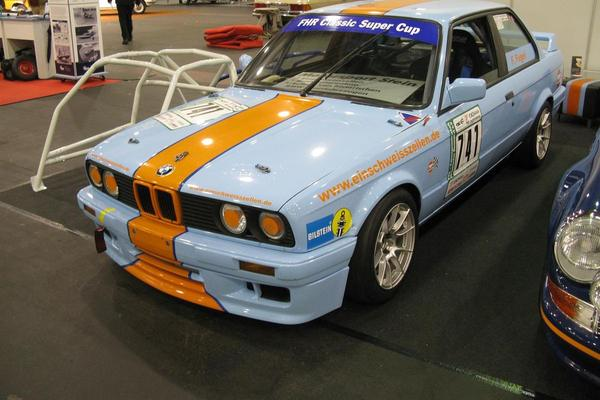
BMW 325i E30. Foto de nakhon100, licencia CC BY 2.0. Ver original en Wikimedia Commons. Recortada y reducida para la web.
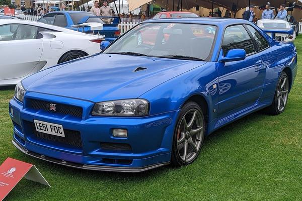
Nissan Skyline R34 GT-R. Foto de Calreyn88, licencia CC BY-SA 4.0. Ver original en Wikimedia Commons. Recortada y reducida para la web.
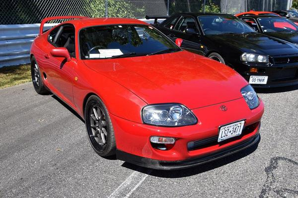
Toyota Supra MK4 Turbo. Foto de Charles from Port Chester, New York, licencia CC0. Ver original en Wikimedia Commons. Recortada y reducida para la web.

Ford Mustang Boss 429. Foto de Greg Gjerdingen from Willmar, USA, licencia CC BY 2.0. Ver original en Wikimedia Commons. Recortada y reducida para la web.
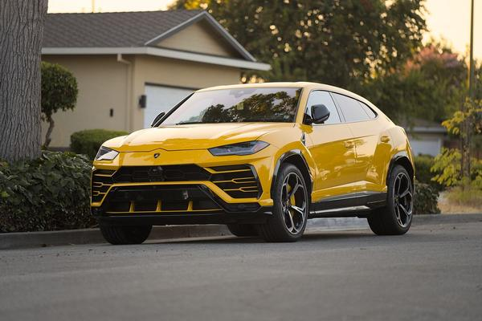
Lamborghini Urus. Foto de Dllu, licencia CC BY-SA 4.0. Ver original en Wikimedia Commons. Recortada y reducida para la web.
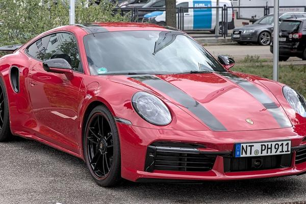
Porsche 911 Turbo S. Foto de Alexander Migl, licencia CC BY-SA 4.0. Ver original en Wikimedia Commons. Recortada y reducida para la web.
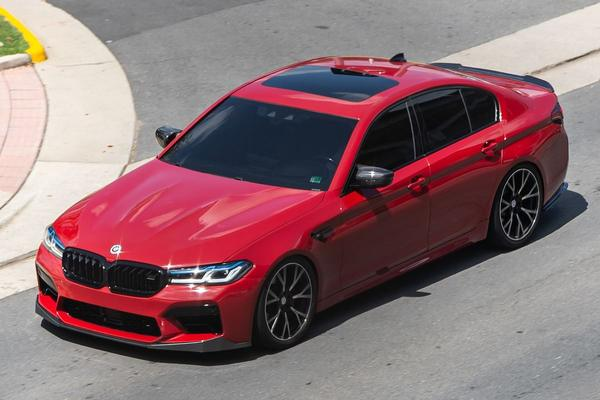
BMW M5 Competition. Foto de OWS Photography, licencia CC BY 4.0. Ver original en Wikimedia Commons. Recortada y reducida para la web.
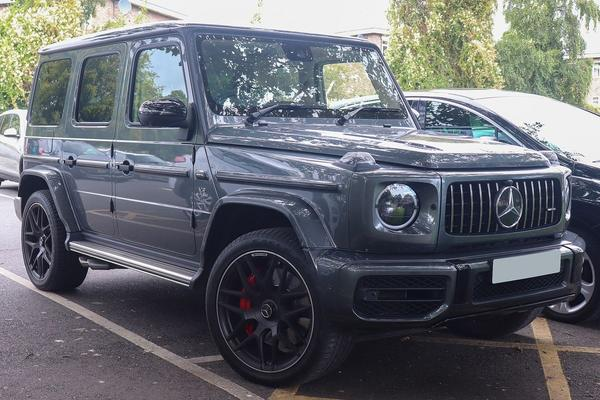
Mercedes-AMG G63. Foto de Vauxford, licencia CC BY-SA 4.0. Ver original en Wikimedia Commons. Recortada y reducida para la web.
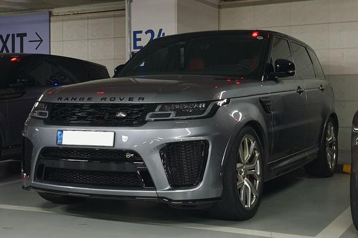
Range Rover SVR. Foto de Damian B Oh, licencia CC BY-SA 4.0. Ver original en Wikimedia Commons. Recortada y reducida para la web.
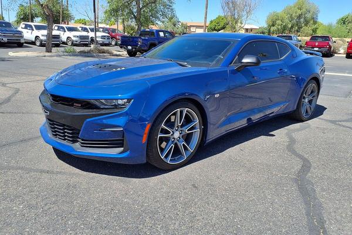
Chevrolet Camaro SS. Foto de HJUdall, licencia CC0. Ver original en Wikimedia Commons. Recortada y reducida para la web.
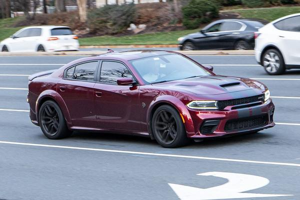
Dodge Charger Hellcat. Foto de OWS Photography, licencia CC BY 4.0. Ver original en Wikimedia Commons. Recortada y reducida para la web.
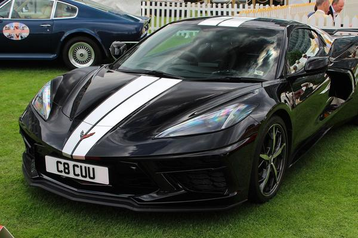
Chevrolet Corvette C8. Foto de MrWalkr, licencia CC BY-SA 4.0. Ver original en Wikimedia Commons. Recortada y reducida para la web.
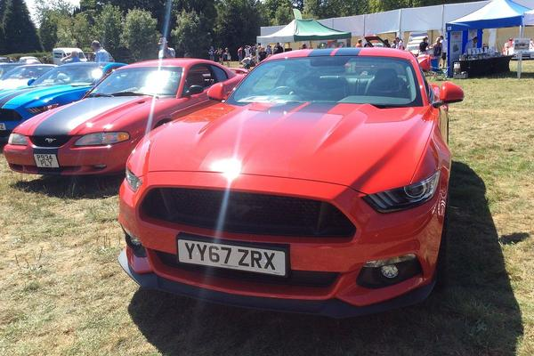
Ford Mustang GT 5.0. Foto de Carfanatic2019, licencia CC BY-SA 4.0. Ver original en Wikimedia Commons. Recortada y reducida para la web.

Motor V8 Competición (Ford Mustang de la Danish Thundersport Championship). Foto de Lav Ulv from Viby J, Denmark, licencia CC BY 2.0. Ver original en Wikimedia Commons. Recortada y reducida para la web.

Nissan 350Z Drift Spec. Foto de Neil, licencia CC BY 2.0. Ver original en Wikimedia Commons. Recortada y reducida para la web.
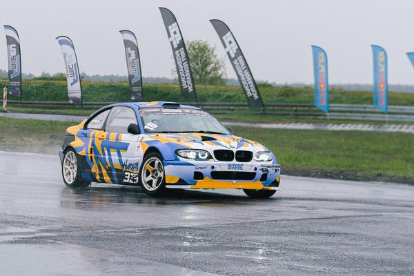
BMW Serie 3 E46 Drift. Foto de Alex Eddit, licencia CC0. Ver original en Wikimedia Commons. Recortada y reducida para la web.

BMW Serie 3 E36. Foto de Lewis Collard, licencia CC BY 3.0. Ver original en Wikimedia Commons. Recortada y reducida para la web.
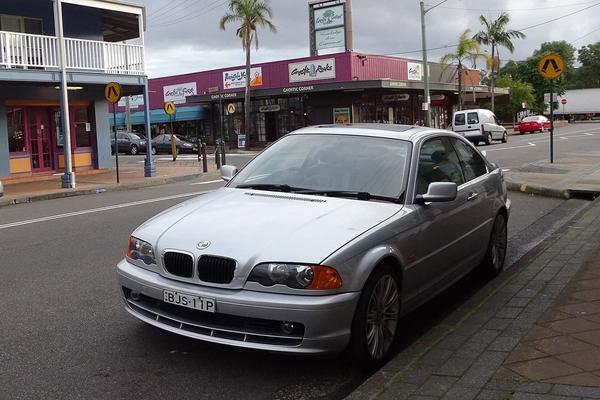
BMW Serie 3 E46. Foto de FotoSleuth, licencia CC BY 2.0. Ver original en Wikimedia Commons. Recortada y reducida para la web.

Lexus IS200. Foto de FotoSleuth, licencia CC BY 2.0. Ver original en Wikimedia Commons. Recortada y reducida para la web.

Lexus IS300. Foto de IFCAR, licencia Dominio público. Ver original en Wikimedia Commons. Recortada y reducida para la web.
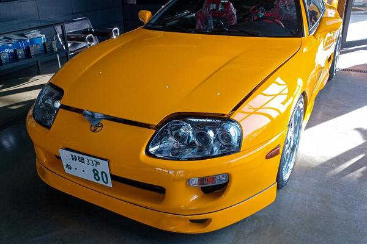
Toyota Supra. Foto de Ethan Llamas, licencia CC BY-SA 4.0. Ver original en Wikimedia Commons. Recortada y reducida para la web.
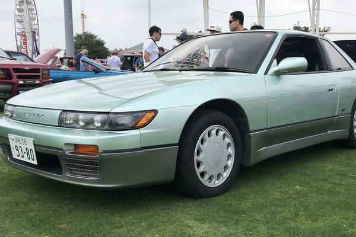
Nissan Silvia S13. Foto de TKOIII, licencia CC BY 4.0. Ver original en Wikimedia Commons. Recortada y reducida para la web.

Nissan Silvia S14. Foto de Alexander-93, licencia CC BY-SA 4.0. Ver original en Wikimedia Commons. Recortada y reducida para la web.

BMW M3 E46. Foto de EurovisionNim, licencia CC BY-SA 4.0. Ver original en Wikimedia Commons. Recortada y reducida para la web.

Ford Mustang GT. Foto de Calreyn88, licencia CC BY-SA 4.0. Ver original en Wikimedia Commons. Recortada y reducida para la web.

Dodge Charger. Foto de Alexander-93, licencia CC BY-SA 4.0. Ver original en Wikimedia Commons. Recortada y reducida para la web.
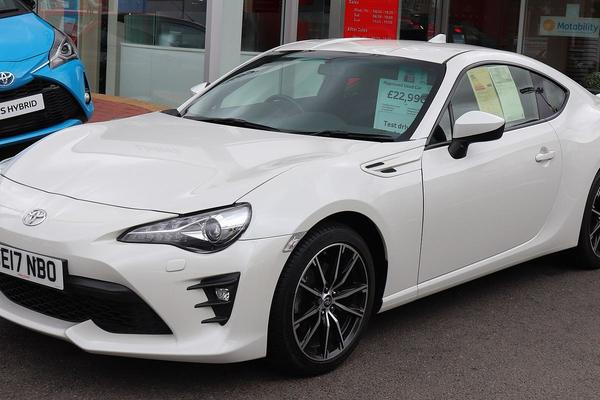
Toyota GT86. Foto de Vauxford, licencia CC BY-SA 4.0. Ver original en Wikimedia Commons. Recortada y reducida para la web.
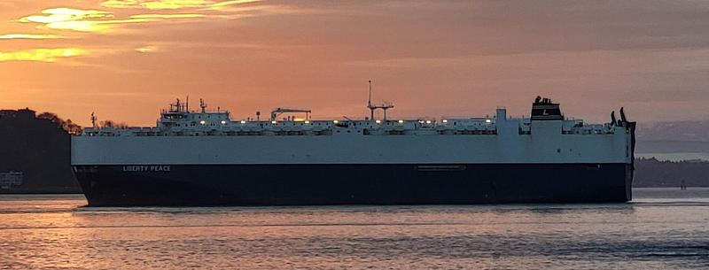
Barco portacoches Liberty Peace. Foto de FPTI, licencia CC0. Ver original en Wikimedia Commons. Recortada y reducida para la web.